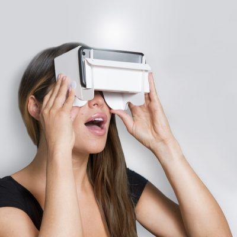
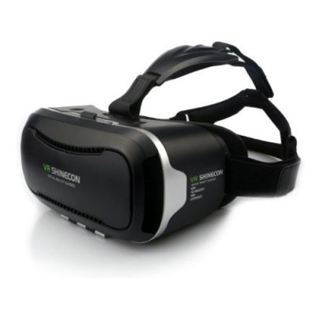
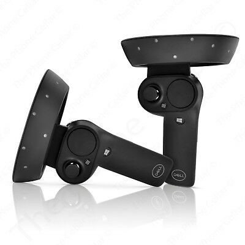
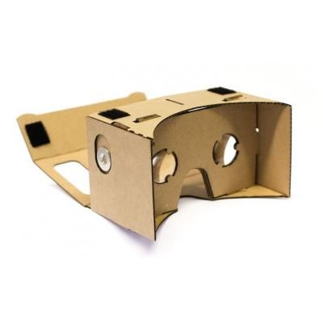
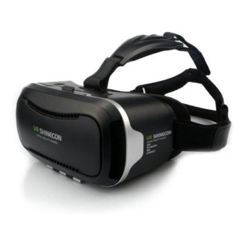
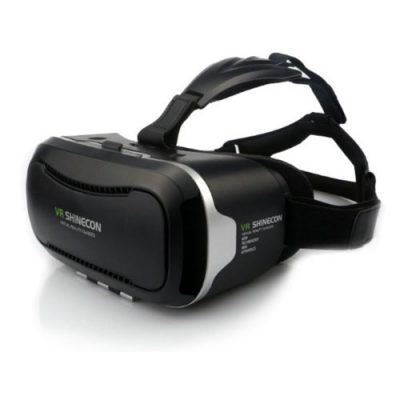
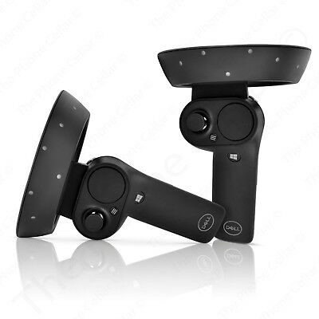
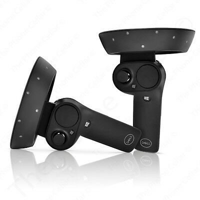
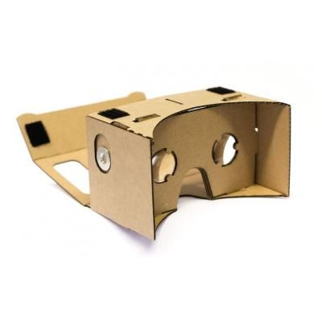
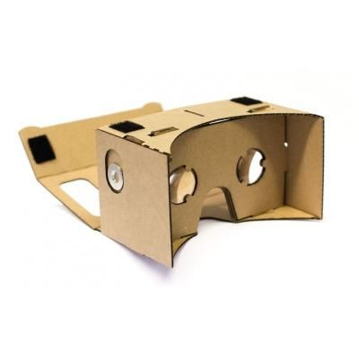

home
reizen
formulier
contacten
info




Virtual reality reizen
Heeft u altijd al op reis willen gaan, maar angst om van huis te gaan? Dan bieden wij hier een reeks documantaires aan die vanuit huis gevolgd kunnen worden. U zal onderhand zich wel afvragen hoe u een reis vanuit huis kan volgen. Dit doen wij namelijk doormiddel van virtual reality (VR).
Wat is virtual reality eigenlijk?
Virtual reality is in het Nederlands vertaald een virtuele realiteit. Om in deze virtuele realiteit te komen doe je een VR-bril op. Dit kan een VR-bril zijn van karton waar u telefoon inzit. Maar ook hele dure met allerlei snufjes. Voor deze reis heeft u aan een kartonnen VR-bril genoeg.
Ik heb geen VR-bril wat nu?
Heeft u geen VR-bril moet u niet denken dat deze reis niks voor u is. Je kan deze documantaires namelijk gewoon volgen zonder VR-bril. Hierbij moeten we wel toegeven dat de documantaires kijken zonder VR-bril een minder intense ervaring is dan met VR-bril. U zult dan niet de mogelijkheid hebben om om u heen te kijken. Maar denk er aan, een VR-bril hoeft niet duur te zijn.
Wat voor documantaires bieden wij aan?
Wij bieden natuurdocumantaires aan. Dit kunnen documantaires zijn van de Oostvaardersplassen, maar denk hierbij ook aan plekken aan de andere kant van de wereld. Hierbij ons hele assortiment: Reis mee door de Oostvaardersplassen, Bottom of the Atlantic ocean, Take a look at the Amazone, Australia's wildlife, Leven op de zuidpool, Nederland in bloei, Op safari in Afrika, Life on iceland, Onze wateren en tot slot bieden wij nog de docu: Wildlife in the cities. Wij hebben dus 10 VR documantaires te bieden.
Info over de documantaires.
Reis mee door de Oostvaardersplassen. In deze documantaire nemen we je mee in de prachtige Oostvaardersplassen. Van lucht tot de bodem van de wateren nemen we je helemaal mee. Duur: 90 minuten.
Bottom of the Atlantic ocean. Neem een kijkje in de diepe wateren van de Atlantische oceaan. In deze docu gaat specifiek over de bodem van de oceaan. Duur 113 minuten.
Take a look at the Amazone. Kijk mee in het grootste oerwoud ter wereld. Duur: 130 minuten.
Australia's wildlife. In deze documantaire volgen we verschillende dieren. Denk aan enge spinnen, maar ook ooit afgevraagd wat er in het koraal zwemt? Duur: 70 minuten.
Leven op de zuidpool. Dit is een docu specifiek over pinquins, van baby tot volwassen dier. Hierin worden er 3 pinquin families gevolgd. Duur: 60 minuten.
Nederland in bloei. Hier nemen we je mee van de Waddeneilanden tot Limburg. Zowel land als zee wordt hier laten zien, een mooi overzicht van de Nederlandse natuur. Duur: 150 Minuten.
Op safari in Afrika. Kijk mee in de Savanne naar de tijgers en giraffen. Ook reizen we af naar de Sahara en zien we veel zeldzame dieren! Duur 120 minuten.
Life on Iceland. In Deze documantaire nemen we je mee met een van de locals. Hij laat ons alles zien wat hij weet, maar ook hij komt voor verassingen te staan. Duur: 80 minuten
Onze wateren. We nemen je in deze documantaire mee van de noordzee tot de lokale plassen. Benieuwd wat er allemaal in Nederland zwemt? Duur: 125 minuten.
Wildlife in the cities. Ooit er overnagedacht wat er allemaal in de grote steden leeft? In deze documantaire gaan we naar Los Angeles, New York en Washington DC.
Wij hopen u genoeg geïnformeerd te hebben over onze reizen en de manier waarop wij deze reizen aanbieden. Wilt u contact met ons opnemen of meer over ons weten? Neem dan een kijkje op onze "meer info" pagina.
 

 

 
